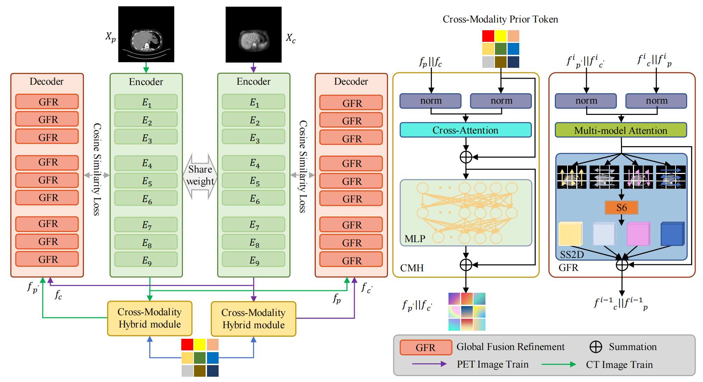
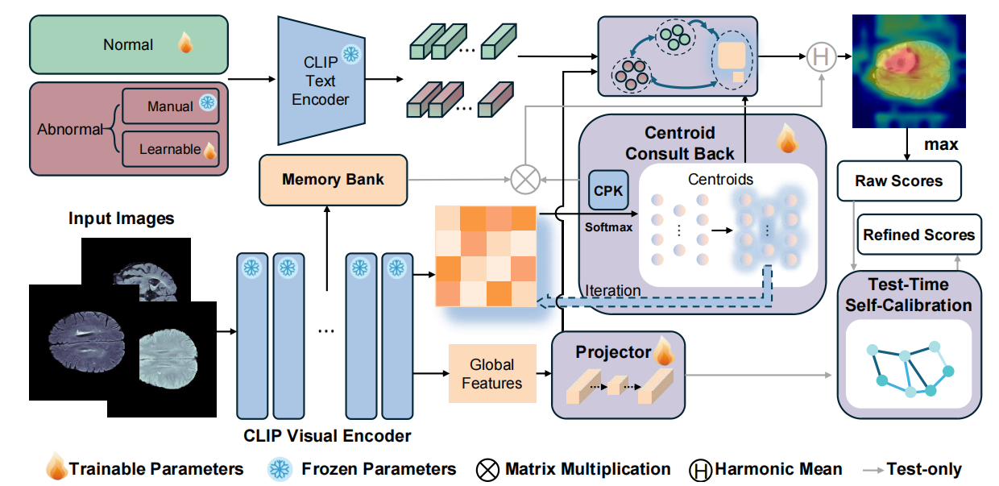
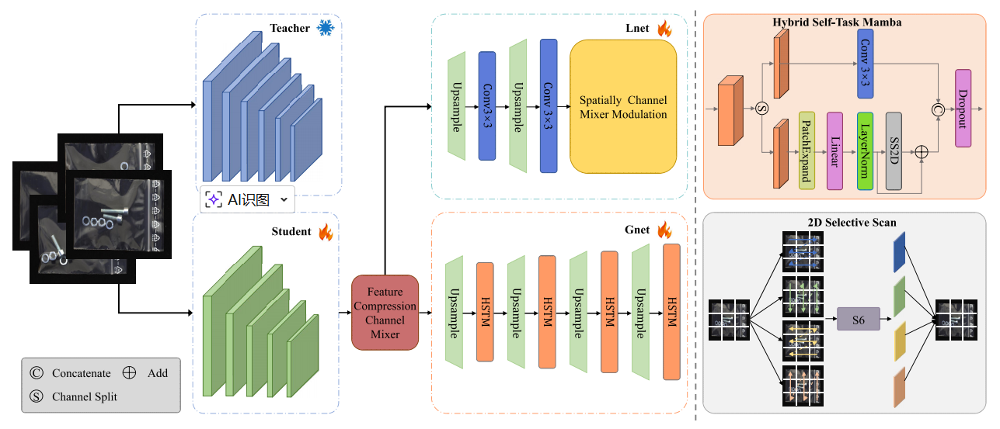
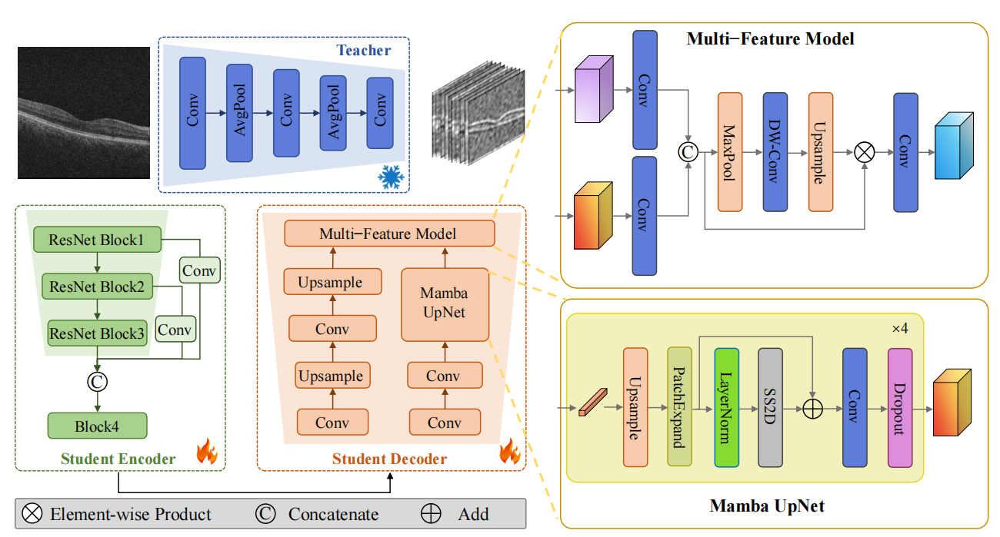
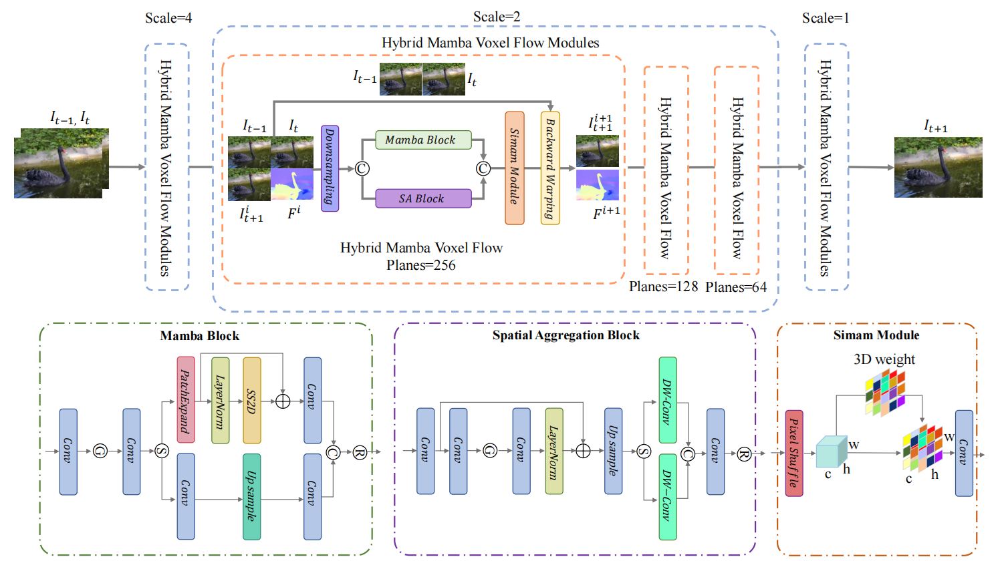
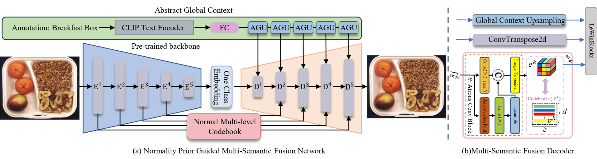
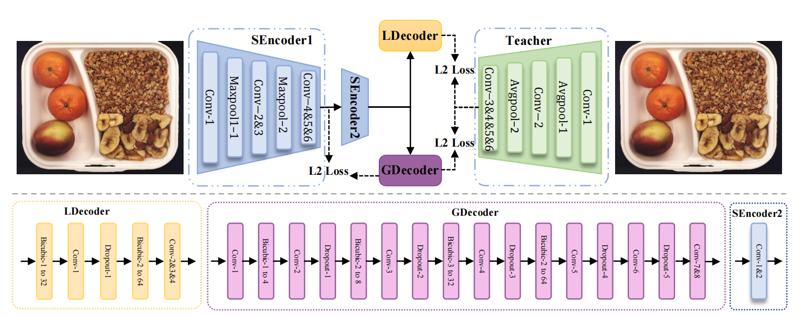
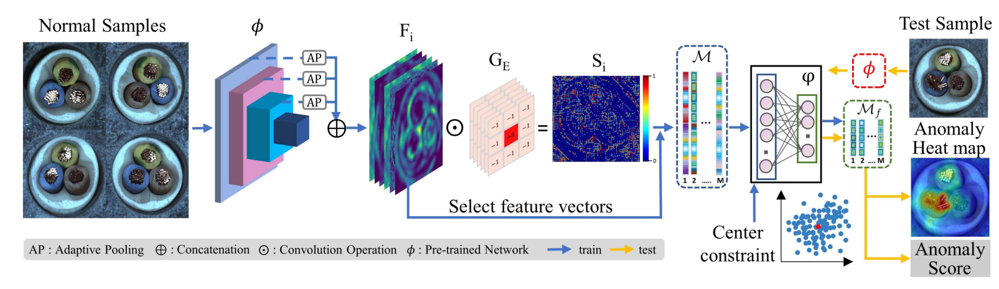

Publications
-

NEW Towards Reliable Medical Unsupervised Anomaly Detection: A Benchmark and Dataset for PET/CT with Cross-Modality Knowledge Distillation Network Information Fusion. JCR Q1 IF = 15.5 [paper]
-

NEW Few-shot Medical Anomaly Detection through Centroid Consultation Back and Test-Time Self-Calibration Pattern Recognition. JCR Q1 IF = 7.6 [paper]
-

NEW Beyond Feature Mapping: Dual-Heterogeneous Knowledge Distillation with Mamba for Industrial Anomaly Detection Expert Systems With Applications. JCR Q1 IF = 7.5 [paper]
-

NEW Hybrid Dual-Heterogeneous Knowledge Distillation Network for Anomaly Detection in Retinal OCT Images IEEE Journal of Biomedical and Health Informatics. JCR Q1 IF = 6.8 [paper]
-

NEW A Framework with Multi-Scale Hybrid Mamba Voxel Flow for Video Prediction IEEE Transactions on Circuits and Systems for Video Technology. JCR Q1 IF = 11.1 [paper]
-

Normality Prior Guided Multi-Semantic Fusion Network for Unsupervised Image Anomaly Detection IEEE Transactions on Instrumentation and Measurement. JCR Q1 IF = 5.9 [paper]
-

Multi-task Hybrid Knowledge Distillation for Unsupervised Anomaly Detection IEEE Transactions on Industrial Informatics. JCR Q1 IF = 11.7 [paper]
-

Discriminative Feature Learning Framework With Gradient Preference for Anomaly Detection IEEE Transactions on Instrumentation and Measurement. JCR Q1 IF = 5.9 [paper]